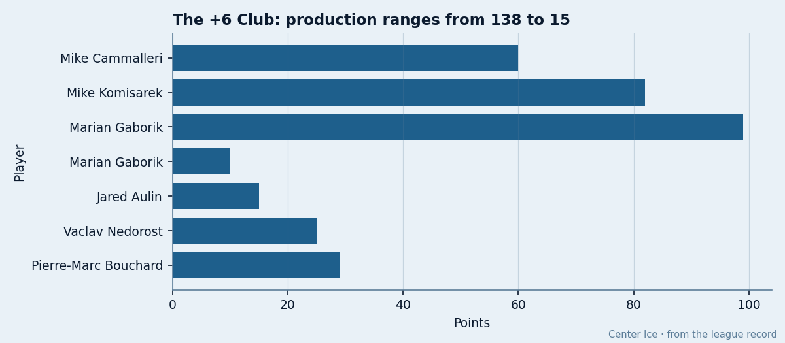
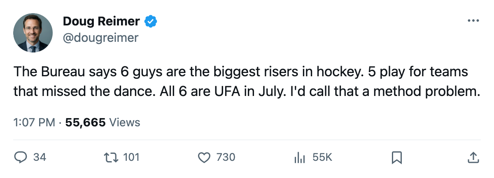
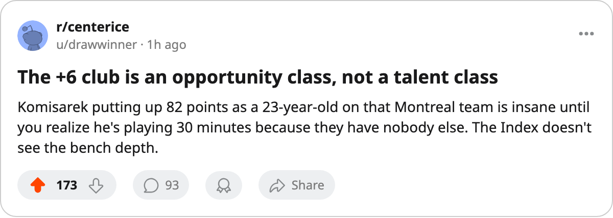

FLA
FLA MIN
MIN5 of 6: The League's Biggest Form Risers Play for Teams That Missed the Playoffs
The Development Index's top label goes to five non-playoff clubs. All six risers are unrestricted this summer on deals under $1.20M.
 Doug ReimerAnalytics editor, ex-video coach · The Slot Report
Doug ReimerAnalytics editor, ex-video coach · The Slot Report
The Bureau's Development Index puts 6 players at +6 this season, its highest form label. Five of them play for clubs that finished outside the top 8 in their conference. All 6 are on expiring contracts at $1.20M or less. If the Index is measuring improvement, this is the free-agency class of the summer. If it is measuring opportunity, it is the most expensive trap in the league.
The method is simple: the Index takes a player's current overall and subtracts his base. A +6 means the player is performing six grades above what his rating profile should produce. The problem is that the method does not control for context. A 23-year-old defenseman on the worst team in the East gets 30 minutes a night because there is nobody else. The Index sees the output and calls it a riser.
The +6 class, by club
| player | team | pos | age | form | base | overall | gp | pts | mpg | salary | club pts | playoff? |
|---|---|---|---|---|---|---|---|---|---|---|---|---|
 Marian Gaborik99 Marian Gaborik99 | TOR | RW | 23 | +6 | 91 | 98 | 82 | 99 | 20.5 | $1.10M | 133 | Yes |
 Mike Cammalleri87 Mike Cammalleri87 | LA | RW | 22 | +6 | 79 | 83 | 61 | 60 | 20.8 | $1.10M | 79 | No |
| Mike Komisarek87 | MTL | D | 23 | +6 | 77 | 82 | 82 | 82 | 30.4 | $1.10M | 66 | No |
 Vaclav Nedorost84 Vaclav Nedorost84 | FLA | C | 23 | +6 | 75 | 78 | 69 | 25 | 13.4 | $1.00M | 76 | No |
| Pierre-Marc Bouchard79 | MIN | C | 21 | +6 | 74 | 77 | 82 | 29 | 11.6 | $1.20M | 79 | No |
| Jared Aulin77 | LA | C | 23 | +6 | 71 | 75 | 72 | 15 | 9.3 | $0.90M | 79 | No |

 Toronto Maple Leafs sits first in the East at 133 points.
Toronto Maple Leafs sits first in the East at 133 points.  Montreal Canadiens sits last at 66. The gap between the two clubs that produced the Index's biggest risers is 67 points. Gaborik's +6 comes on 20.5 minutes from the top line of the Presidents' Trophy team. Komisarek's +6 comes on 30.4 minutes from the first pairing of a 66-point team that gave up 295 goals.
Montreal Canadiens sits last at 66. The gap between the two clubs that produced the Index's biggest risers is 67 points. Gaborik's +6 comes on 20.5 minutes from the top line of the Presidents' Trophy team. Komisarek's +6 comes on 30.4 minutes from the first pairing of a 66-point team that gave up 295 goals.
The minutes problem
Komisarek and Cammalleri log top-line minutes. The other four sit between 9.3 and 13.4 minutes a night. That spread tells you something about what the Index is actually capturing. Aulin at 9.3 minutes, 15 points, and a 71-to-75 jump is a bottom-six center who got 72 games instead of 40. Bouchard at 11.6 minutes and 29 points on a 79-point club is a second-line center who played all 82 because the club had no reason to rest him.
The overall grades have moved. The question is whether the move predicts next season or whether it predicts that a coach on a bad roster has no choice but to play young men who would sit on a good one.
 Los Angeles Kings has two risers: Cammalleri and Aulin, both on $0.90M to $1.10M deals. The club finished 11th in the West at 79 points. If both players are genuine +6 risers, LA has two bargain UFA assets that could anchor a rebuild or fetch returns at the trade deadline next season. If the improvement is opportunity inflation, LA overpaid by 50 cents each for a hot stretch on a bottom-six forward and a backup center.
Los Angeles Kings has two risers: Cammalleri and Aulin, both on $0.90M to $1.10M deals. The club finished 11th in the West at 79 points. If both players are genuine +6 risers, LA has two bargain UFA assets that could anchor a rebuild or fetch returns at the trade deadline next season. If the improvement is opportunity inflation, LA overpaid by 50 cents each for a hot stretch on a bottom-six forward and a backup center.
The contract layer
All 6 are unrestricted after this season. The sheet gives them between $0.90M and $1.20M. Gaborik at $1.10M for 99 points and Komisarek at $1.10M for 82 points are the kind of deals that get extended at triple the salary in July. Even if you discount their output by 40% for context, those deals are below market.
| player | salary | points | mpg | club finish | what you are buying |
|---|---|---|---|---|---|
| Marian Gaborik | $1.10M | 99 | 20.5 | 1st, East | confirmed: top line, 1 seed, 59 wins |
| Mike Cammalleri | $1.10M | 60 | 20.8 | 11th, West | 20.8 min, 61 gp, non-playoff RW |
| Mike Komisarek | $1.10M | 82 | 30.4 | 15th, East | 30.4 min, 82 gp, worst team in East |
| Vaclav Nedorost | $1.00M | 25 | 13.4 | 14th, East | 3rd-line C on a 76-point club |
| Pierre-Marc Bouchard | $1.20M | 29 | 11.6 | 12th, West | 2nd-line C on a 79-point club |
| Jared Aulin | $0.90M | 15 | 9.3 | 11th, West | 4th-line C, 15 points in 72 games |
The risk is the other direction. A team that signs Komisarek to a four-year deal at a premium is paying for 30 minutes on a team with no defensive depth. Put him on a contender that gives him 22 minutes and a partner, and the 82-point season may not repeat.
What passes the filter
Gaborik alone clears the opportunity test. He plays 20.5 minutes on a club that won 59 games, leads the league in point differential at 191, and is not getting inflated minutes because of roster desperation. His 99 points at 23 years old on a $1.10M deal is the one riser that the Index is calling correctly and the market will confirm in July.
Cammalleri is the closest case. At 20.8 minutes he is playing a true top-line role for LA, which means the opportunity is real but the team is not good enough to validate it. If he moves to a contender that gives him 18 minutes on the second line, the 60-point season compresses to 35 or 40. The Index would call that a regression.
The remaining four are not risers in any way a GM can bank on. They are young players on bad teams who got volume because the team had nothing else. The Index sees a number that moved and calls it form. A video coach would call it the only option on the bench.
The rookie draft is 39 days away. The free-agent market closes on July 28. Six players the Bureau just labeled the biggest risers in hockey will test the market on the same day. Whether that market pays the Index or pays the context is the question this summer answers.

